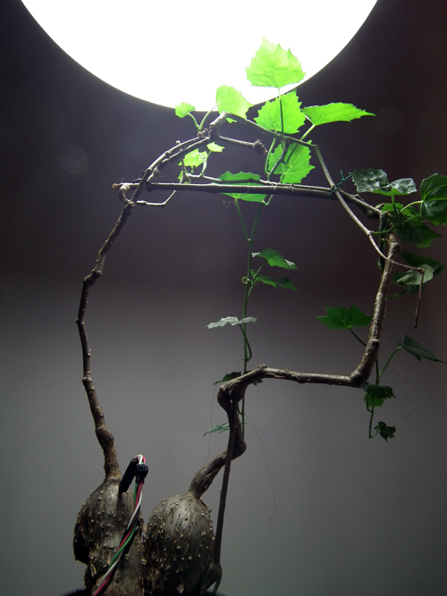

Cissus sp. , vitaceae
Solo pour montée de sève est l'archétype des versions proposées depuis 2010 dans les Pièces pour montée de sève. Ici conduite par l'idée de « chef d'orchestre » la plante génère une composition sonore suivant son propre rythme biologique. Chaque intervention voit ses gammes, sa tonalité et son timbre ajustés à l'espace d'installation. Le dispositif prête une voix aux plantes et permet d'en suivre l'expressivité.
Matériaux:
Plantes (Cyphostemma sp.) lampe à LED de croissance, montage électronique, ordinateur, capteurs de montée de sève dit de Granier TDP
Dimensions : environ 1m2